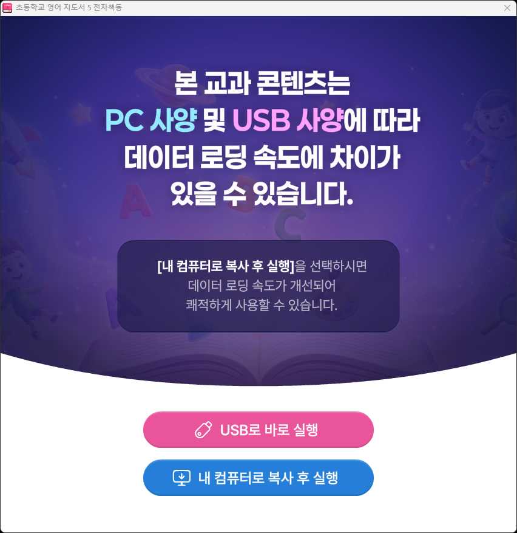

변경 이력최신 문서 v1.0.002
- 스와이프로 페이지 넘김 기능 추가 (교과서 화면)
- 설정 창에 퀵 메뉴·스와이프로 페이지 넘김 on/off 토글 기능 추가
- 최초 배포
개요
OnBook 뷰어는 교과서와 차시별 수업 콘텐츠를 보고, 그리기·메모·스크랩 등 수업에 필요한 도구를 함께 사용할 수 있는 학습 뷰어입니다.
이 문서는 OnBook 뷰어의 화면 구성과 기능별 사용법을 안내합니다.
뷰어 실행
| 환경 | 실행 방법 |
|---|---|
| PC (설치형) |

교과서 업데이트는 내 컴퓨터로 복사 후 실행(PC에 설치된 교과서)에서만 가능합니다.
USB로 바로 실행은 교과서 업데이트를 사용할 수 없습니다.
설치를 선택하면 바탕화면에 교과서 바로가기와 함께 OnBookManager가 만들어집니다. 이를 실행하면
설치된 교과서 목록을 확인하고 실행 · 삭제할 수 있습니다.
|
| 웹 버전 | 브라우저(Chrome/Edge 권장)로 안내받은 인터넷 주소에 접속합니다. |
메인 화면
뷰어를 실행하면 가장 먼저 보이는 화면입니다.

주 메뉴
| 메뉴 | 설명 |
|---|---|
| 교과서 | 교과서를 펼쳐 봅니다. 실제 책처럼 양면으로 페이지를 넘기며 볼 수 있습니다. (교과서) |
| 콘텐츠 | 차시별 수업 콘텐츠를 한 화면씩 진행합니다. 하이라이트·스크랩 등 수업용 도구를 함께 사용합니다. (콘텐츠) |
| 내 수업하기 | 차시·스크랩·자료를 조합해 나만의 수업을 구성하고 저장한 뒤, 그 순서대로 수업을 진행합니다. (내 수업하기) |
상단 메뉴
| 메뉴 | 설명 |
|---|---|
| 진도 보기 | 지금까지의 학습 진도를 확인합니다. (PC 버전에 한해 제공) |
| 자료실 | 수업·활동 자료를 모아 놓은 자료실을 엽니다. |
| 사용 설명서 | 뷰어에 내장된 사용 설명서를 새 창으로 엽니다. |
쪽 이동
화면 오른쪽 아래 입력란에 교과서 쪽수를 입력하고 이동 버튼을 누르면 해당 쪽의 교과서 페이지가 바로 열립니다.
교과서
교과서를 양면 보기로 읽는 화면입니다. 좌우의 화살표 버튼으로 페이지를 넘길 수 있고, 화면 아래 메뉴 바에서 다양한 기능을 사용할 수 있습니다.

하단 메뉴 기능
| 기능 | 설명 |
|---|---|
| 홈 | 홈으로 이동합니다. |
| 자료실 | 자료를 열람하고, 다운로드 할 수 있습니다. |
| 썸네일 | 교과서 페이지를 미리 보고, 해당 페이지로 이동할 수 있습니다. |
| 목차 | 교과서의 차례를 확인하고, 원하는 단원·차시로 이동할 수 있습니다. |
| 검색 | 교과서 본문 내 텍스트를 검색할 수 있습니다. |
| 그리기 | 교과서 본문에 그림·필기를 할 수 있습니다. (그리기 도구 참고) |
| 메모 | 텍스트 메모를 하여 교과서 본문에 저장할 수 있습니다. 메모들은 내 자료함에서 확인할 수 있습니다. |
| 단면/양면 | 교과서를 단면·양면으로 볼 수 있습니다. |
| 확대/축소 | 화면을 확대·축소 할 수 있습니다. |
| 이동 | 교과서 쪽수를 입력하여, 해당 페이지로 이동할 수 있습니다. |
| 인쇄 | 교과서 페이지를 인쇄할 수 있습니다. |
| 페이지 캡처 | '교과서만' 또는 '교과서와 필기 내용'을 저장할 수 있습니다. |
| 내 자료함 | 교과서에 기록한 메모, 북마크를 모아 볼 수 있습니다. |
| 내 수업하기 | 스크랩 한 자료, 인터넷 주소(URL), 파일 등 추가 기능을 사용하여 나만의 수업 차시를 구성할 수 있습니다. (내 수업하기 참고) |
| 도움말 | 기능들에 대한 설명을 볼 수 있습니다. |
| 설정 | 하단 바 기능들의 순서를 바꾸거나 삭제하고, 퀵 메뉴·스와이프 페이지 넘김을 켜고 끌 수 있습니다. |
북마크
페이지 위쪽 모서리의 북마크 버튼으로 북마크 표시할 수 있습니다. 표시한 페이지는 썸네일과 내 자료함에서 볼 수 있습니다.
퀵 메뉴바
화면에 떠 있는 퀵 메뉴바는 원하는 위치로 끌어다 놓을 수 있습니다. 페이지 이동이 가능하며, 퀵메뉴의 설정을 클릭하여 2가지 기능을 탑재할 수 있습니다.
퀵 메뉴바가 필요 없을 때는 설정 창 위쪽의 퀵 메뉴 토글을 꺼서 화면에서 숨길 수 있습니다.
콘텐츠
차시별 수업 콘텐츠를 한 화면씩 진행하는 모드입니다. 좌우 화살표로 화면을 넘기며, 오른쪽 사이드 메뉴에서 기능을 사용합니다.

오른쪽 메뉴 기능
내 수업하기
차시 콘텐츠·수업 스크랩·자료를 원하는 순서로 조합해 나만의 수업을 만들고 저장하는 화면입니다.

수업 구성하기
- 차시 · 수업 스크랩 · 자료 탭에서 수업에 넣을 항목을 추가합니다. (자료 탭의 자료 추가는 PC 버전에서만 가능합니다)
- 오른쪽 목록에서 항목을 드래그해 순서를 바꾸고, 필요하면 구분(구분선)을 넣어 단계를 나눕니다.
- 스크랩 항목은 미리 보기 버튼으로 내용을 확인할 수 있습니다.
- 저장을 누르고 수업 이름을 입력하면 구성이 저장됩니다. 이미 저장한 수업을 불러온 상태에서는 덮어쓰기로 수정 내용을 반영합니다.
저장한 수업을 선택하면 구성한 순서대로 수업을 진행할 수 있습니다.
그리기 도구
메뉴에서 그리기를 누르면 그리기 도구 막대가 나타납니다.
| 도구 | 설명 |
|---|---|
| 일반 펜 | 자유롭게 선을 그립니다. |
| 형광펜 | 반투명한 굵은 선으로 강조합니다. |
| 직선 / 점선 | 곧은 실선·점선을 그립니다. |
| 색상 / 선 굵기 | 펜 색과 굵기를 바꿉니다. |
| 요소 지우기 | 그린 선을 하나씩 지웁니다. |
| 전체 지우기 | 현재 페이지에 그린 내용을 모두 지웁니다. |
| 흰 배경 보이기/숨기기 | 페이지 위에 흰 배경을 덮어 그 위에 그릴 수 있습니다. |
| 그림 보이기/숨기기 | 그린 내용을 잠시 숨기거나 다시 표시합니다. |
활동 도우미
화면 오른쪽 메뉴의 활동 도우미에는 수업 진행에 유용한 도구들이 모여 있습니다.
| 도구 | 설명 |
|---|---|
| 칠판 | 빈 칠판 창을 열어 자유롭게 그릴 수 있습니다. |
| 타이머 | 활동 시간을 재는 타이머를 띄웁니다. |
| 주의집중 | 주의를 환기하는 효과음을 재생합니다. |
| 깜깜이 | 화면 전체를 어둡게 가립니다. 화면을 누르거나 ESC 키로 해제합니다. |
| 모둠 점수판 | 모둠별 점수를 기록하는 점수판을 엽니다. |
| 발표 도우미 | 발표할 학생(번호)을 무작위로 뽑습니다. |
| 벌칙 고르기 | 룰렛을 돌려 벌칙(항목)을 무작위로 고릅니다. |
알아두면 좋은 기능
화면에 드러나지 않지만 알아두면 편리한 기능들입니다.
- 키보드로 페이지 넘기기 (교과서 화면) — ← / → 또는 Page Up / Page Down 키로 페이지를 넘길 수 있습니다. (입력란이나 창이 열려 있을 때는 동작하지 않습니다)
- 스와이프로 페이지 넘김 (교과서 화면) — 화면을 좌우로 밀어 페이지를 넘길 수 있습니다. (그리기 중이거나 화면을 확대한 상태에서는 동작하지 않습니다) 필요 없으면 설정 창의 스와이프 페이지 넘김 토글로 끌 수 있습니다.
- 깜깜이 해제 — 화면을 누르는 것 외에 ESC 키로도 해제할 수 있습니다.
- 썸네일 목록 스크롤 — 썸네일 목록 위에서 마우스 휠로 목록을 넘길 수 있습니다.
저장 데이터 전체 초기화
설정 창을 연 상태에서 창 안을 5초간 길게 누르고 있으면 초기화 확인창이 나타납니다. 확인을 누르면 내 수업·진도 저장·내 자료함 데이터가 모두 삭제됩니다. 뷰어를 처음 상태로 되돌리고 싶을 때 사용하세요.
피드백 보내기
다음과 같은 것을 발견하면 사소해 보여도 모두 알려 주세요.
- 오류·멈춤·깨진 화면 등 명백한 문제
- 버튼을 눌렀을 때 기대와 다르게 동작한 경우
- 기능은 정상이지만 사용법을 몰라 헤맨 부분 (직관성 문제)
- 있으면 좋겠다고 느낀 개선 아이디어
리포트 양식
아래 항목을 채워 보내 주시면 문제를 훨씬 빨리 찾을 수 있습니다.
- 제목
- 한 줄 요약 — 예: "교과서 화면에서 형광펜 색을 바꿔도 이전 색으로 그려짐"
- 발생 위치
- 어느 화면·어느 기능인지 — 예: 교과서 화면 > 그리기 > 형광펜
- 재현 절차
- 문제가 다시 발생하도록 하는 단계 — 예: ① 그리기 열기 ② 형광펜 선택 ③ 색상을 빨강으로 변경 ④ 선 긋기
- 기대한 결과 / 실제 결과
- 예: 빨간 형광펜으로 그려져야 함 / 노란색으로 그려짐
- 환경
- PC(설치형)인지 웹인지, 사용 기기·브라우저 — 예: Windows 11 + 설치형 / iPad + Safari
- 스크린샷·영상
- 가능하면 첨부 (화면 캡처만으로도 큰 도움이 됩니다)